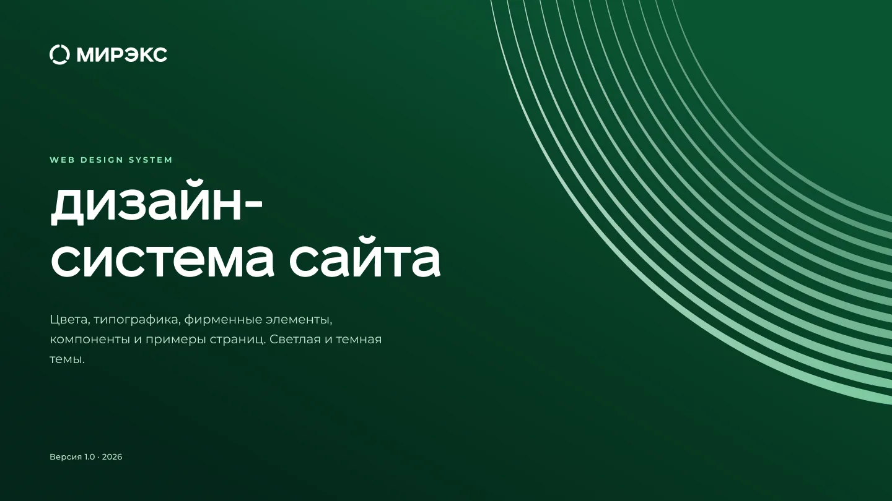
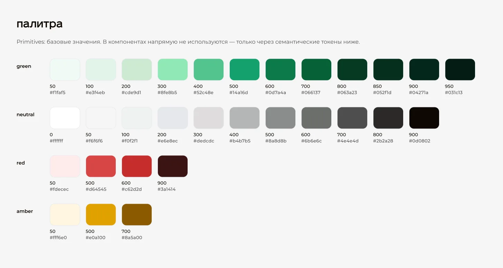
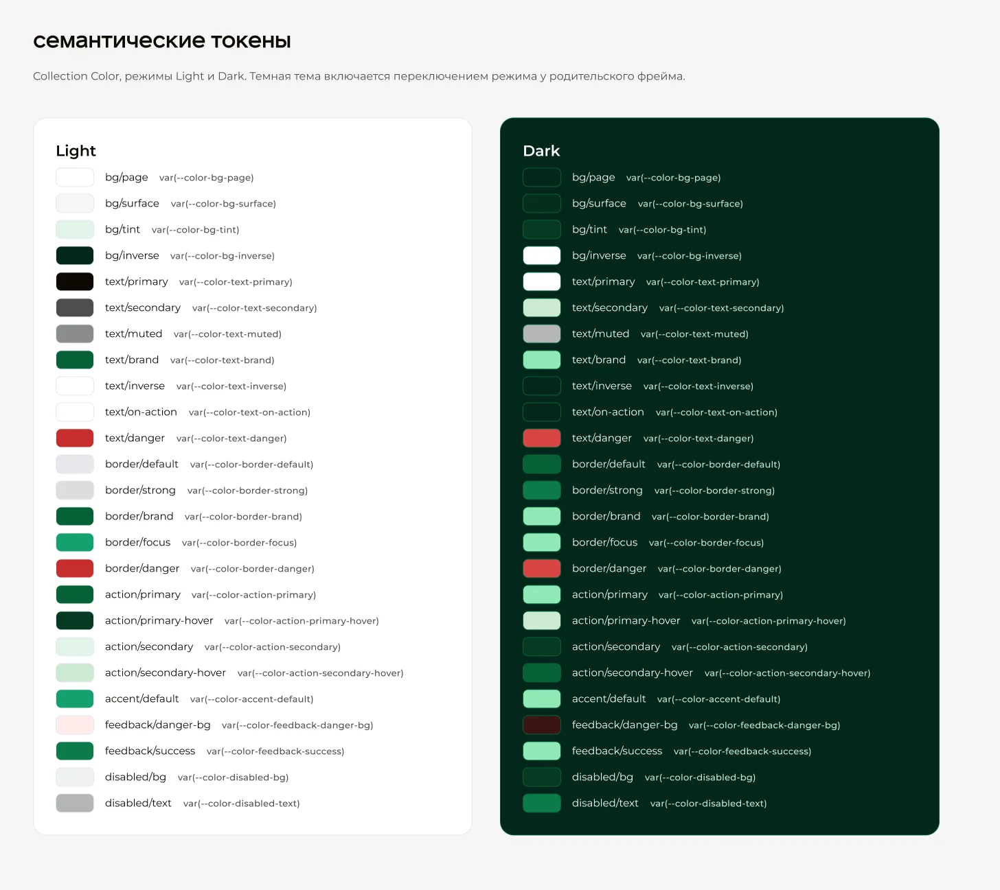
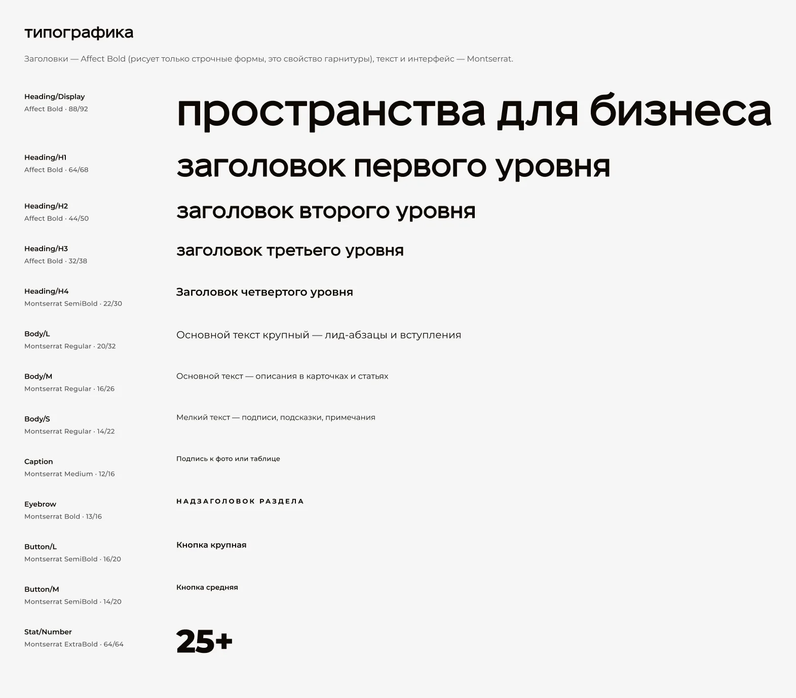
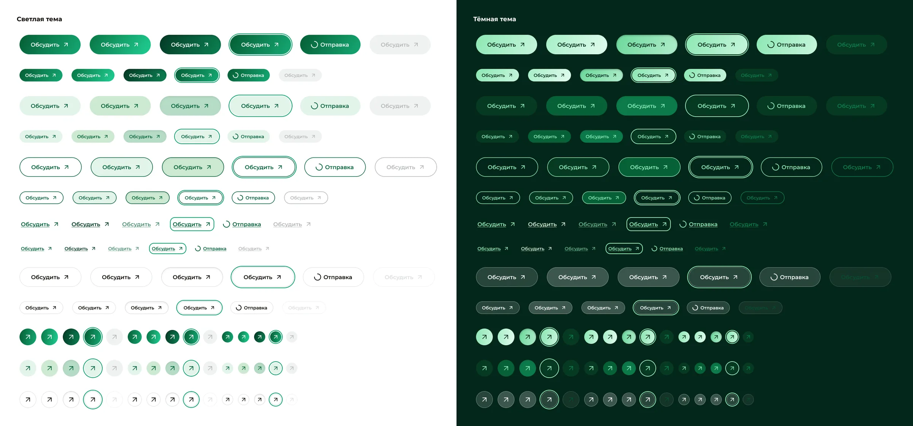
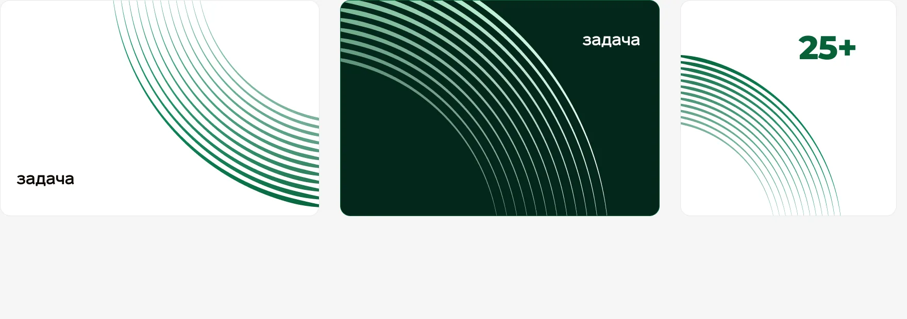

MIREX Web Design System
A token-driven design system for a B2B website: one set of components, light and dark themes.
Context
MIREX builds exhibition stands. Its print and social work already had a recognisable look, but the website had nothing to stand on: no tokens, no components, no rules. The team liked a series of greeting cards I had made, so the brief was simple: the same visual language, without the holiday theme, as a system the website can be built from.

Foundations
82 variables in four collections. Primitive palettes (green 50–950, neutrals, red, amber) are never used directly — components only reference 25 semantic colour tokens such as bg/surface, text/brand or action/primary-hover.
Each semantic token has a Light and a Dark mode. Switching the mode on a parent frame re-themes a whole page, so there is not a single duplicated component for dark mode. Spacing runs on a 4 px scale (4–128), radii from 0 to pill, and 13 text styles pair Affect for headlines with Montserrat for everything else.



Components
Buttons come in five variants — Primary, Secondary, Ghost, Link and Glass — three sizes and six states, including focus and loading: 90 variants with label and icon exposed as properties. Icon buttons, inputs, tags, cards, header, hero, CTA banner and footer are built the same way, and the example pages are assembled only from these parts.

Brand pattern
The brand's arc pattern used to end in a dense block with a hard diagonal cut. I regenerated the geometry with code from a single Bézier spine and wrote usage rules: the arc always runs off the edge of a block, its ends are never visible, and a page uses it at most twice.

Handoff
Every variable carries a CSS code-syntax name, and the tokens are exported as a tokens.css file with the same names — light theme in :root, dark under [data-theme="dark"]. Developers read var(--color-action-primary) in Figma and type the same thing in code.